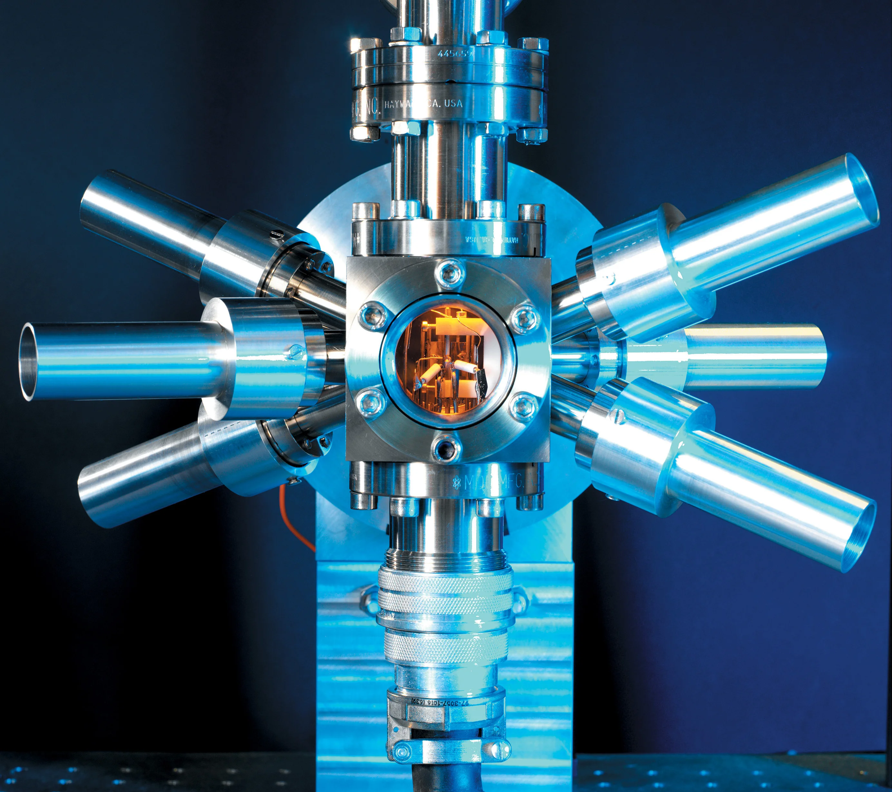

Atomic-clock: GPS satelite
Atomic clocks are integral components of GPS system, providing precise time signals necessary for accurate positioning and navigation. Each GPS satellite contains multiple atomic clocks that contribute very precise time data to the GPS signals. These clocks ensure that the time signals transmitted by the satellites are synchronized to within a few nano-seconds enabling GPS receivers to determine the time to within 100 billionths of a second. Atomic clocks measure time by monitoring the resonating frequency of atoms. It is based on atoms having different energy levels. Electron states in an atom are associated with different energy levels and during the transition between such states, they interact with a very specific frequency of electromagnetic radiations.
How does it work?
1. Atoms are excited using laser or Maser (Microwave Laser).
2. When atoms drop energy level, it creates electron transition frequency as frequency standard.
Atomic clock gives an error of 1 second in 10 million year. In our normal watches, an electronic pulse is passed through a cesium crystal. These wrist-watches are affected by Earth’s magnetic field and surrounding temperature.
Ex:- Rubidium atomic clock , Hydrogen measure atomic clock ,Mercury atom atomic clock
← Back to This Year’s Articles